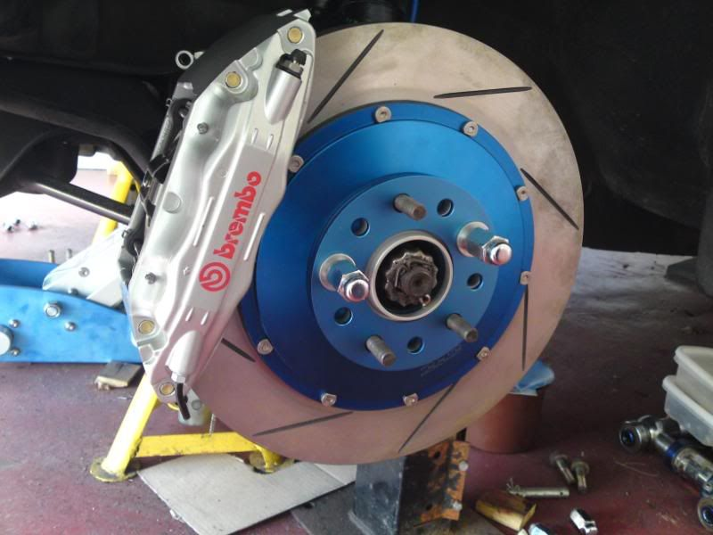

-
I'm piecing together some stuff to make a big brake package, my aim is to have it bolt-on for people with non-turbo front hubs (yay!) but of course you'll need longers studs pressed in (ichiba/peak…)
*snip*
So it's becoming reality, there's been a little delay on the rotors but they are coming, the calipers will be arriving sooner, the brackets will be made on demand
The rotors will be 2-piece with T6061 hats (black) designed to fit over Z31 non-turbo front hubs (all years) in 4 AND 5 bolt pattern, the rings will be 330x32mm high tensile iron, slotted, directional vane
Calipers are going to be massive mofos (black), pads will have approximately 24% greater surface area and 8% larger piston area than Z32/R32 calipers
A very very attractive pre-buy for 3 lucky sobs will begin in mid-october, delivery around mid-november, everyone else will be directed to a vendor who will pick up the remaining sales
Pre-buy price will be announced when it starts, retail price will be determined by vendors, but should be well below $1000 for the complete front brake kit
If everything goes right, I will also have extended wheel studs available at an attractive price
They will look something like this:
 -
Re: Who's interested in 2-piece brakes?
I still cant figure out who needs $1500 in brakes when the stock size stuff is more than adequate. Ask anyone here who road races about stock z brakes. Our lemons car has na brakes with porterfield pads and nobody out brakes us.Nearly all men can stand adversity, but if you want to test a mans character make him a moderator. -
Re: Who's interested in 2-piece brakes?
GE with a 2 piece rotor, late style turbo rear brakes could be fitted direct to any Z31 Rear trailing arm without modification.G-E wrote: I'll figure out something for the rears
The only reason i had to space my calipers out was to suit the rotor I was using, had i opted for a custom hat/race style rotor it would have been bolt on.
Didn't Advanman have a bolt on mega front brake upgrade/brackets/ hat style/floating rotors already ?
more options the better I suppose.85 Turbo Slick Top
__________________________________________________ _____ -
Re: Who's interested in 2-piece brakes?
Just before anyone goes crazy, it would be less than $1000 total, pad selection would be enormous, and replacement rings would be ~$100 each -
Re: Who's interested in 2-piece brakes?
I still can't figure out why you're here. What's the last positive thing you've posted?aceman wrote: I still cant figure out who needs $1500 in brakes when the stock size stuff is more than adequate. Ask anyone here who road races about stock z brakes. Our lemons car has na brakes with porterfield pads and nobody out brakes us.
GE I'll be interested in this in probably early 2nd quarter next year? Need to purchase expensive welder and a few other things first lol.
And yes, AV had a sweet front setup using Wilwood Superlight calipers IIRC.

1988 300zxt. gt35, stance, etc. Wheels: Varrstoen ES2 18x9.5 et-13 225/40. 18x10.5 et0 245/40
1990 jetta vr6'd -
Re: Who's interested in 2-piece brakes?
With 32mm thickness, that requires R32 GT-R calipers or Brembo calipers and aren't that readily available in the US. That's some money in just the calipers. Unless you can find us a great deal on R32 GT-R calipers I would think about it.
1986 300ZX Turbo…sold
1990 Skyline GT-R…new money pit
2014 Juke Nismo RS 6-speed…daily -
Re: Who's interested in 2-piece brakes?
Leave that to meNissanEgg wrote: With 32mm thickness, that requires R32 GT-R calipers or Brembo calipers and aren't that readily available in the US. That's some money in just the calipers. Unless you can find us a great deal on R32 GT-R calipers I would think about it.
-
Re: Who's interested in 2-piece brakes?
[quote]DeleriousZ wrote:I would have guessed you twin piston turbo brakes were limiting your setup. #Ihavebigfrontbrakeslookatme #form>functionOriginally posted by aceman -
Re: Who's interested in 2-piece brakes?
Yeah, I can't brake hard enough when I'm sitting in the driveway.
1988 300zxt. gt35, stance, etc. Wheels: Varrstoen ES2 18x9.5 et-13 225/40. 18x10.5 et0 245/40
1990 jetta vr6'd -
Re: Who's interested in 2-piece brakes?
Guys don't turn this thread into crap like so often happens… only comment if you are suggesting improvements/specific options you want, or just showing your support
If you DON'T want 2-piece brakes then avoid this thread please, or go race with your stock brakes and have fun! -
Re: Who's interested in 2-piece brakes?
Well I'm just getting the Arizona Z car big front brake setup with 6 pot calipers for the z31, also is 2 piece, and since I have z32 rear setup I can get the 4 pot brake kit for the rear, should be perfect for street and road racing. Plus all together the kit is just of $2k for a complete track car brake setup!1uz Swapped, lowered, flaked out '86 z31
'72 Datsun 510 4dr, ka24de-T, slammed resto mod
'84 z31 turbo, coils, wheels a.k.a the gfs weekend car
'86 na2t parts for now a.k.a eventually will get running with a/c daily
'83 280zx project backburner a.k.a ls turbo drag car one day
Custom vg30et tube chassis drift exocet project -
Re: Who's interested in 2-piece brakes?
$1350 vsbadboyz31 wrote: Well I'm just getting the Arizona Z car big front brake setup with 6 pot calipers for the z31, also is 2 piece, and since I have z32 rear setup I can get the 4 pot brake kit for the rear, should be perfect for street and road racing. Plus all together the kit is just of $2k for a complete track car brake setup! -
Re: Who's interested in 2-piece brakes?
[quote]G-E wrote:$1350 vsOriginally posted by badboyz311uz Swapped, lowered, flaked out '86 z31
'72 Datsun 510 4dr, ka24de-T, slammed resto mod
'84 z31 turbo, coils, wheels a.k.a the gfs weekend car
'86 na2t parts for now a.k.a eventually will get running with a/c daily
'83 280zx project backburner a.k.a ls turbo drag car one day
Custom vg30et tube chassis drift exocet project -
Re: Who's interested in 2-piece brakes?
Hey G-E, do they make 2-piece rotors for the stock sized R32 GT-R rotors and calipers?
I would think about 2-piece rotors for GT-R setup and the GT-R calipers if could be had at decent price. Do you know if the R32 bits bolt right on the turbo hubs and such with just a spacer to center the caliper like we do with Z32 bits?
1986 300ZX Turbo…sold
1990 Skyline GT-R…new money pit
2014 Juke Nismo RS 6-speed…daily -
Re: Who's interested in 2-piece brakes?
[quote]DeleriousZ wrote:For someone hanging onto my nuts so hard, you obviously only read posts about daydreaming. 90% of my posts are helping people who were never taught to think for themselves.Originally posted by aceman
A z31 with big brakes look cool but nobody who buys them will ever use them. That won't stop you or anyone else from wasting money but you don't need to make people new to the z31 think that brakes are a weak point.
My buddy had R32 GTR calipers on z32 rotors and 88 turbo hubs, I don't know how much he had to space the calipers.Nearly all men can stand adversity, but if you want to test a mans character make him a moderator.

Copyright © 2006–. All rights reserved. Privacy Policy